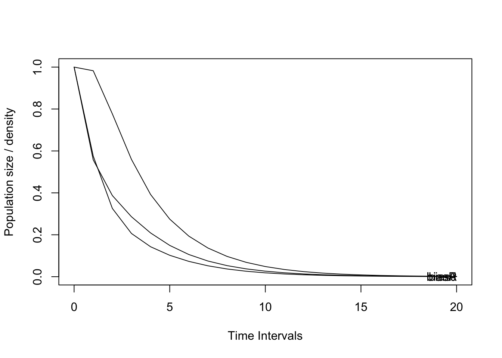
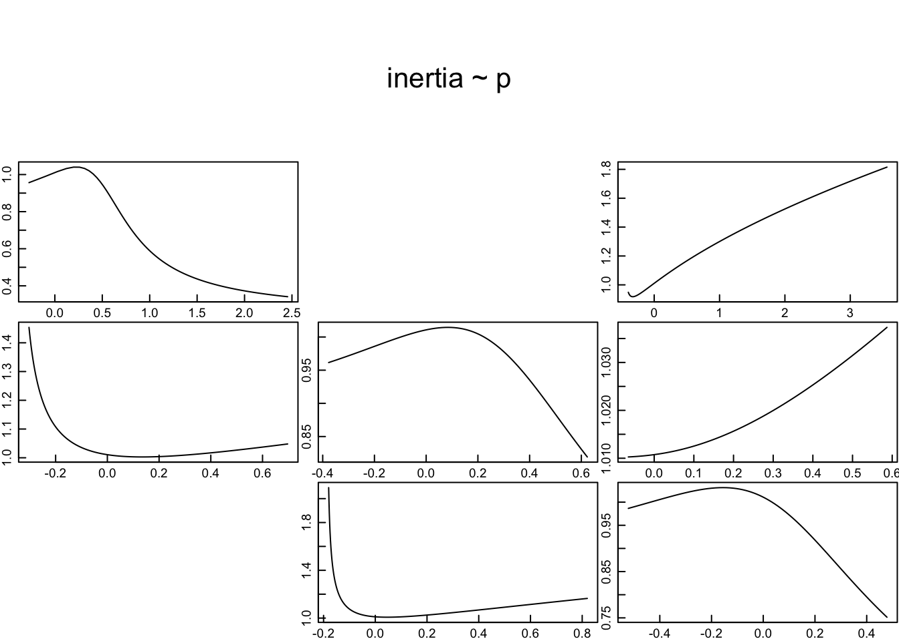

Análisis de Viabilidad Poblacional (PVA) de Dracula chimaera en el Bosque de San Antonio, Colombia.
Andrés Camilo Romero Gómez 1, Anne Y. Ñuscua Otero 1,2 & Nhora Helena Ospina-Calderón1,3
1,Pontificia Universidad Javeriana seccional Cali; Facultad de Ciencias e Ingeniería; Departamento de Ciencias Naturales y Matemáticas; Programa de Biología,
2,Fundación Ser para Ser, 3,Asociación Vallecaucana de Orquideología.
Dracula chimaera es una orquídea endémica de la cordillera occidental colombiana, para la cual no se encuentra evaluado su estatus de conservación y se desconocen muchos aspectos sobre su biología y ecología. El análisis de viabilidad poblacional PVA permite diagnosticar el estado de conservación y las posibilidades de manejo para poblaciones silvestres. Este estudio adelantó un análisis de viabilidad poblacional de Dracula chimaera en el Área Clave de Biodiversidad del Bosque de San Antonio, Valle del Cauca. Se realizaron dos censos durante 2022 y 2023, donde, por medio de un muestro preferencial, se contaron y marcaron plantas creciendo en el suelo y sobre los árboles hasta los 4m de altura sobre el forófito. Para cada individuo se recogieron datos alométricos y de fecundidad para proponer una estructura para la población y desarrollar un análisis de viabilidad poblacional por medio de matrices de transición aplicando y dinámica asintótica y transitoria. Se propone una estructura de 3 clases de tamaño (plántula, juvenil, adulto). Se censaron 139 plantas: 38 plántulas, 65 juveniles y 36 adultos. Los datos de ambos censos permitieron establecer que la población decrece (λ: 0.702) y un tercio de los individuos censados murió durante el estudio. Los juveniles y adultos (w: 0.35 ambos) son los más importantes para mantener la estructura estable de la población. Según la matriz de elasticidad; las transiciones con mayor incidencia para la población son las permanencias, en los adultos (39.3%), seguido de los juveniles (15.8%). Y llama la atención el retroceso de los adultos a juveniles en un 6.5%, las dinámicas donde se prioriza la persistencia hablan de organismos iteróparos de larga vida, sin embargo, las tasas vitales y sus tendencias demuestran que existen condiciones adversas para el crecimiento y permanencia de la población. Este estudio pretende ampliar el conocimiento ecológico y del estado de conservación de la especie D. chimaera.
PALABRAS CLAVE
Orchidaceae, bosque de niebla, matriz de transición, dinámica poblacional,
Introducción
Las orquídeas se caracterizan por tener gran diversidad morfológica y ecológica (Dressler, 1981). Se estima que existen entre 25.000 y 30.000 especies en cerca de 700 géneros distribuidos en casi todos los ecosistemas, y particularmente, la mayor diversidad de especies de orquídeas se encuentra en centro América, el norte de sur América, en la cordillera de los Andes (Dressler, 1993; Chase et al., 2003; Givnish et al. 2015, Pérez-Escobar et al. 2024). En Colombia se reportan alrededor de 4.270 especies de orquídeas agrupadas entre 270 y 280 géneros (MADS & UNAL, 2015). De las cuales, el 37% (1580) son endémicas (Pimm, 2009; Orejuela-Gartner, 2010, MADS & UNAL, 2015).
Las principales amenazas que presentan las orquídeas es la transformación del hábitat y los efectos del cambio climático (MADS & UNAL, 2015; Gale et al., 2018). Estas alteraciones influyen en las amenazas e impactan a las especies en función de su distribución, biología y ecología (Flanagan & Mosquera-Espinosa, 2016). La recolección indiscriminada e ilegal es otra de las amenazas importantes a nivel global (Flores-Palacios & Valencia-Díaz 2007; Hinsley et al., 2018). En Colombia, solo 441 especies de orquídeas han sido evaluadas para su estado de conservación. Esto representa el 10% de la flora de orquídeas del país (Ospina-Calderón et al., 2021). Para la mayoría de las especies endémicas aún son desconocidos el estado de conservación y la información sobre su historia natural (MADS & UNAL, 2015).
Los estudios ecológicos de dinámica poblacional son una línea de investigación importante con aplicaciones que permiten comprender la forma en que las poblaciones son afectadas por diferentes factores que las amenazan, los mecanismos de selección natural y las respuestas adaptativas que pueden presentar (Piñero et al., 1977; Shefferson et al., 2019), estos estudios proporcionan información para evaluar la estructura poblacional, lo que permite inferir la vialidad de una población y diseñar planes de manejo conservación sobre evidencias y modelos específicos que busquen reducir la probabilidad de extinción (Elzinga et al., 2001). Los estudios demográficos de orquídeas en Colombia son escasos y están enfocados en especies endémicas como en Rodriguezia granadensis (Ospina-Calderón et al., 2013; Caicedo, 2019), Cattleya quadricolor (Torres, 2018), Masdevallia racemosa (Ñuscua-Otero, 2022) que han permitido conocer la estructura y dinámica poblacional, aportando información acerca de la ecología y conservación de estas especies.
Dracula chimaera es una de las especies del género Dracula más comercializada por sus enormes flores, que están entre las más grandes dentro del género. Aunque se encuentra afectada por la recolección excesiva y destrucción del hábitat debido a actividades agrícolas, su categoría de amenaza nacional es de Preocupación Menor (LC) (Calderón-Sáenz, 2006, Res. 0126 2024). Sin embargo, se desconocen a la fecha muchos aspectos sobre su ecología y las amenazas que han afectado a las poblaciones en el país.
Éste estudio pretende aportar al conocimiento de Dracula chimaera, proponiendo por primera vez, la estructura de una población del género que permita entender la dinámica de la población y el estado de conservación en el Área Clave de Biodiversidad del Bosque de San Antonio. Mediante el uso de herramientas demográficas, el estudio de la alometría y los rasgos reproductivos se pretende hacer un primer diagnóstico del estado de la conservación de la especie para proponer lineamientos que permitan el monitoreo de esta población y sugerir acciones que garanticen la viabilidad de la población y la especie a largo plazo.
Métodos
Especie de estudio
El género Dracula es exclusivo del neotrópico, se reconocen 120 especies (Bosco et al., 2011), con distribución desde el sur de México hasta Perú (Calderón & Farfán, 2003; Pupulin et al., 2009). En Colombia, el género Dracula está representado por 72 especies (Bosco et al., 2011). Dracula chimaera es una especie endémica de Colombia reportada en los bosques de las cordilleras central y occidental, entre 1300 y 2200 metros de altitud (Calderón-Sáenz, 2006). Se encuentra registrada para los departamentos de Antioquia, Cauca, Chocó, Nariño, Risaralda y el Valle del Cauca (Romero A. C, 2022). Es una especie epifita de tamaño mediano-grande (Figura 1) con tallos agrupados subtendidos por 2-3 vainas sueltas que llevan una hoja apical, erecta y estrechamente oblanceolada. (Pupulin et al., 2009).
![DSC_0038 (2)][D:/Nhora/Documents/R/Dracula]
Figura 1. Planta de Dracula chimaera. (Foto: Nhora Helena Ospina-Calderón).
Área de estudio
El estudio se desarrolló en el Área Clave de Biodiversidad Bosque de San Antonio, Valle del Cauca. El área abarca 8795 hectáreas y pertenece a los municipios de Cali, Dagua, La Cumbre y Yumbo (CVC, 2019; Fundación Natura, 2019). Corresponde a un ecosistema de bosque medio húmedo en montaña (BOMHUMH) con bosques de niebla ubicados a más de 1700 m.s.n.m. Una temperatura media anual de 17 °C, una precipitación media anual de 1897 ml, régimen de lluvias bimodal (Kattan et al., 1994; Palacio et al., 2019). Es una de las 36 áreas principales de biodiversidad del hotspot de los Andes Tropicales. El objetivo de conservación de esta área es el de promover la conectividad ecológica, el mantenimiento de la biodiversidad y los servicios ecosistémicos (CVC, 2019; Birdlife International, 2022). Su principal amenaza es la fragmentación del bosque, la pérdida del hábitat y la extracción ilegal de recursos no maderables del bosque (Kattan et. al. 1994, Birdlife International, 2022).
Captura de datos
Se realizaron dos censos entre junio y julio de 2022 y 2023. A una altura promedio de 2100 msnm. Los individuos fueron ubicados y etiquetados por medio de recorridos aleatorios, luego se procedió a colectar datos alométricos. Se censo un total de 140 individuos. Se registró el número de hojas, inflorescencias, botones, flores, frutos. Para cada individuo se midió la hoja más grande/bandera, el largo y el ancho, el largo del raquis de las inflorescencias; desde el tallo hasta el pedicelo y se contaron las cicatrices de la inflorescencia, (Figura 2).
![DSC_0038 (2)][D:/Nhora/Documents/R/Dracula]
Figura 2. Datos registrados para cada planta. A. Numero de hojas. B. Número de frutos y flores (círculos de color rojo). C. número de inflorescencias y botones (círculo rojo); y el largo y el ancho de cada hoja bandera (líneas de color blanco).
Análisis de datos
Los datos morfológicos fueron analizados utilizando el programa RStudio versión 2022.07.2+576 (RStudio Team, 2022). Inicialmente se verificó la normalidada en la distribucioón de los datos alométricos por medio de la prueba Shapiro Wilk Test (Hut, 2017). Luego de evaluaron correlaciones de Spearman entre las variables vegetativas y reproductivas para conocer las variables más fuertemente relacionadas. En Excel versión 2021 se organizaron los datos con mayor índice de correlación para crear gráficas de dispersión de datos vegetativos contra reproductivos que permitiera comprender las diferentes discontinuidades en la dispersión de los datos y relacionarlas con la capacidad diferencial de sobrevivir y reproducirse de los grupos de individuos y de ésta manera identificar las variables más efectivas para clasificar a la población por clases de tamaño (Tremblay y Hutchings, 2002).
Estructura de la población
A partir de los análisis de correlación y las gráficas de dispersión, se estructuró la población en clases de tamaño. La clasificación se determinó a partir del área foliar (multiplicando el ancho y largo de la hoja bandera) de la hoja bandera y el número de hojas por individuo. Para la fertilidad se tomaron los frutos observados por cada planta adulta como una medida de aptitud reproductiva, siendo esta una medida indirecta. Para la fecundidad se obtuvo calculando la probabilidad de que una planta registrada con flor diera fruto, es decir, el número de frutos presentes en el total de plantas por etapa sobre el número total de plantas de la misma etapa (Tremblay y Hutchings, 2002). Se definieron tres cases de tamaño, plántula, juvenil y adulto. Plántula: Individuos que posean de 2 a 5 hojas, con un área foliar de la hoja bandera menor que 20 cm2. Juveniles: Individuos que cuentan con un mínimo de 5 hojas, con área foliar de la hoja bandera entre 20 cm2 y 70 cm2. Adultos: Individuos que posean 5 o más hojas, con un área foliar de 70 cm2, en adelante. Con estos datos se propone el diagrama de ciclo de vida con probabilidades de permanencia y retroceso entre las etapas (Figura 3).
Code
# diagrama delciclo de vida sin probabilidadeslibrary(Rage)matA <-rbind(c(0.3, 0.1, 0.4),c(0.3, 0.4, 0.1),c(0.0, 0.2, 0.5))etapas <-c("plantulas", "juvenil", "adultos")title <-NULLplot_life_cycle(matA, stages=etapas, fontsize =0)
Figura 3. Diagrama de ciclo de vida con tres etapas y las probabilidades de transición entre ellas, crecimiento, permanencia, regresión y fecundidad.
Elaboración de la Matriz demográfica de transición
Para elaborar la matriz se contaron cuantos individuos pertenecen a cada una de las transiciones y se la proporción de estos individuos sobre el total de los individuos registrados y muertos para la etapa correspondiente, la fecundidad se calculó para el segundo año de muestreo a razón de las plántulas sobre los adultos, popbio? (Tremblay y Hutchings, 2002).
Cálculo de la dinámica asintótica y transitoria
La dinámica de la población fue calculada a partir de la matriz de transiciones y por medio del paquete popdemo (Stott et al. 2018) para predecir la cantidad de individuos de la población a futuro, la matriz de elasticidad, la estructura estable, valor reproductivo, tasa de crecimiento poblacional (Tremblay y Hutchings, 2002) y los índices de dinámica transitoria como tiempo de quiebre dr, tiempo de convergencia, Inercia, entre otros (Tremblay et al. 2015).
Resultados
Estructura de la población
En los resultados de las correlaciones entre las variables, se encontraron que el ancho y el largo de la hoja bandera de cada planta, presentaron una correlación de 0.94 (Figura 4) lo que indica que la relación es fuerte y significativa, con ello se calculó el área foliar de cada hoja bandera (multiplicando el ancho y el largo).
![DSC_0038 (2)][D:/Nhora/Documents/R/Dracula]
Figura 4. Matriz de correlaciones entre las variables. Abreviaciones: Nº: Numero de (planta, hojas, inflorescencias, cicatrices de inflorescencia, botones o frutos). ASF: altura sobre el forofito. LHL: largo de la hoja bandera. AHL: ancho de la hoja bandera. LP: largo del raquis de la inflorescencia. C. Inflo: cicatrices de inflorescencias.
Las tres clases de tamaño (etapas del ciclo de vida) propuestas para D. chimaera en este estudio, plántula, juvenil y adulto, se determinaron a partir del área foliar de la hoja bandera y el número de hojas por individuo observando las abundancias por cada etapa y posibles discontinuidades en la dispersión de los datos (Figuras 5). A partir de lo anterior, en la población estudiada, 65 (46,76 %) individuos están en la etapa de vida juvenil, representa la mayor abundancia de la especie, seguido de las plántulas con 38 (27,33 %) y por ultimo los adultos con 36 individuos (25,89 %) (Figura 5).
![DSC_0038 (2)][D:/Nhora/Documents/R/Dracula]
Figura 5. dispersión de las relaciones más fuertes. Dispersión de datos de acuerdo con el número de hojas, evidencia del cambio de acuerdo con el número de hojas. Abundancia de individuos por etapa.
Matriz demográfica de transición
A partir de los censos del 2022 y 2023 se calcularon las transiciones entre las clases de tamaño (etapas) por medio de una matriz de tres por tres, éstas transiciones pueden ser representadas también sobre el ciclo de vida propuesto para la planta de manera gráfica, lo que facilita su visualización y entendimiento (Figura 6). En el gráfico se puede ver que las transiciones que pueden ocurrir con mayor probabilidad serán las de la permanencia de los adultos, seguido por la de los juveniles y la reproducción de los adultos.
Figura 6. Diagrama del ciclo de vida de D. chimaera con las probabilidades de transición calculadas entre el 2022 y 2023.
Dinámica asintótica y transitoria
Con base en el cálculo de la matriz de transición, se estimó la dinámica de la población a 50 y a 20 intervalos de tiempo, que en este caso corresponden a 50 y 20 años debido a que el censo se adelantó anualmente y la especie presenta un pico de floración anual. La tendencia de la población es el decrecimiento que llega al límite inferior en el plazo de 10 años para todas las etapas o clases de tamaño (Figura 7).
Code
#install.packages("popdemo")library(popdemo)
Welcome to popdemo! This is version 1.3-2
Use ?popdemo for an intro, or browseVignettes('popdemo') for vignettes
Citation for popdemo is here: doi.org/10.1111/j.2041-210X.2012.00222.x
Development and legacy versions are here: github.com/iainmstott/popdemo
── Conflicts ────────────────────────────────────────── tidyverse_conflicts() ──
✖ dplyr::filter() masks stats::filter()
✖ dplyr::lag() masks stats::lag()
ℹ Use the conflicted package (<http://conflicted.r-lib.org/>) to force all conflicts to become errors
Code
library(readxl)# Raymond's theme modifications graficas lindasNHO_theme <-theme(axis.title.y =element_text(colour="grey20",size=15,face="bold"),axis.text.x =element_text(colour="grey20",size=15, face="bold"),axis.text.y =element_text(colour="grey20",size=15,face="bold"), axis.title.x =element_text(colour="grey20",size=15,face="bold"))#simulacion con una matriz 2022-2023# Create a 3*3 PPM( Total <-matrix(c(0.2727, 0.0000, 0.3957, 0.3030, 0.3770, 0.0652, 0.0000, 0.1803, 0.5217), byrow=TRUE, ncol=3) )
# a 20 años----------------------------------------------------------p3 <-project(Total, time =20, Aseq ="unif")# stochastic projection informationAseq(p3)
[1] 1 1 1 1 1 1 1 1 1 1 1 1 1 1 1 1 1 1 1 1
Code
nmat(p3)
[1] 1
Code
# plotplot(p3)

Code
ggsave("Total2023_3.png")
Saving 7 x 5 in image
Figura 7. Proyección de la dinámica poblacional de D. chimaera a 20 años para el bosque de San Antonio
Luego de esto se incluye el vector inicial o la estructura inicial por etapas que permitió calcular los valore dominantes de la matriz como, la tasa de crecimiento poblacional Lambda (λ) de 0.7076 lo que confirma la tendencia de la población hacia el decrecimiento y también el valor dominante derecho o la estructura estable de la población (ss) con los mayores valores para los juveniles 0.3505990 seguido por los adultos 0.3400269 y finalmente las plántulas 0.3093741. El valor dominante izquierdo es interpretado como el valor reproductivo (rv) que fue mayor para los adultos, 1.5413577 seguido por los juveniles 0.8405984 y finalmente las plántulas 0.5856469.
Code
# Create an initial stage structure(initialTotal <-c(33,61,46) )
[1] 33 61 46
Code
#Análisis asintóticoeigs(Total, what ="all", check =TRUE)
Con los valores dominantes se calcula la sensitividad y la elasticidad, ésta ultima estandarizada permite sumar los valores por etapa y por tipo de transición para mostrar la influencia de los diferentes procesos dentro de la población (Tabla 1)
Code
# Calculate sensitivities of dominant eigenvalueelas(Total)
P J A
P 0.06982542 0.0000000 0.11135858
J 0.11135858 0.1570179 0.02633649
A 0.00000000 0.1376951 0.38640795
Tabla 1. Matriz de elasticidad y sumatorias de elasticidades por etapa y por tipo de transición para la población de D. chimaera en el Bosque de San Antonio.
# Calculate the convergence time of the 3 stage-biased# populations within 0.1% of lambda-max( convt(Total, accuracy=1e-3) )
[1] 9 9 7
Code
# Calculate the convergence time of the projection of initial and A# to within 0.001% of lambda-max( convt(Total, vector=initialTotal, accuracy=1e-5) )
[1] 12
Code
# Calculate damping ratiodr(Total)
[1] 2.217586
Code
# Calculate damping ratio and time to convergence using a# multiple of 10dr(Total, return.time=TRUE, x=10)
$dr
[1] 2.217586
$t
[1] 2.891172
Code
# Calculate the upper bound on inertia of Ainertia(Total,bound="upper")
[1] 1.541358
Code
# Calculate the lower bound on inertia of Ainertia(Total,bound="lower")
[1] 0.5856469
Code
# Calculate case-specific inertia of A and initialinertia(Total, vector=initialTotal)
[1] 1.010752
Code
# Calculate case-specific inertia of A and initial and# return realised population size at t=25inertia(Total, vector=initialTotal, return.N=TRUE, t=25)
Warning in inertia(Total, vector = initialTotal, return.N = TRUE, t = 25): Estimation of N will be inaccurate for
t where the model has not converged.
$inertia
[1] 1.010752
$N
[1] 0.02486331
Code
# Diagnose ergodicityisErgodic(Total)
[1] TRUE
Code
# Create a 3x3 nonergodic PPMLBBTotal<-Total; LBBTotal[3,2] <-0; LBBTotal
P J A
P 0.2727 0.000 0.3957
J 0.3030 0.377 0.0652
A 0.0000 0.000 0.5217
Code
# Diagnose ergodicity and return left eigenvectorisErgodic(LBBTotal, return.eigvec=TRUE)
# Calculate the bound on maximal amplification of Amaxamp(Total)
[1] 1.578955
Code
# Calculate the bound on maximal amplification of A and# return the stage that achieves itmaxamp(Total, return.stage=TRUE)
$maxamp
[1] 1.578955
$stage
[1] 3
Code
# Calculate case-specific maximal amplification of A# and initialmaxamp(Total, vector=initialTotal)
[1] 1.011492
Code
# Calculate case-specific maximal amplification of A# and initial and return realised population size and the# time at which it is achievedmaxamp(Total, vector=initialTotal, return.N=TRUE, return.t=TRUE)
$maxamp
[1] 1.011492
$N
[1] 25.12163
$t
[1] 5
Code
# Calculate the bound on maximal attenuation of Amaxatt(Total)
[1] 0.5700057
Code
# Calculate the bound on maximal attenuation of A and# return the stage that achieves itmaxatt(Total, return.stage=TRUE)
$maxatt
[1] 0.5700057
$stage
[1] 1
Code
# Calculate case-specific maximal attenuation of A# and initialmaxatt(Total, vector="n")
[1] 0.5700057
Code
# Calculate case-specific maximal attenuation of A# and initial and return realised population size and the# time at which it is achievedmaxatt(Total, vector="n", return.N=TRUE, return.t=TRUE)
$maxatt
[1] 0.5700057
$N
[1] 0.1429042
$t
[1] 4
Code
# Calculate case-specific maximal attenuation of A# and initial and return realised population size and the# time at which it is achievedmaxatt(Total, vector="n", return.N=TRUE, return.t=TRUE)
$maxatt
[1] 0.5700057
$N
[1] 0.1429042
$t
[1] 4
Code
#gráfico con sombra BosqueTotalpd <-project(Total, "diri", time =15, draws =10000,standard.A =TRUE)jpeg('Total.jpg')plot(Totalpd, plottype ="shady", bounds = T, log ="y")dev.off()
quartz_off_screen
2
Figura 8
Code
#Transfer function analysis of inertia of a population matrix projection model for all matrix elements. tfmatTotal <-tfam_inertia(Total, vector=initialTotal) #...and plot it! plot(tfmatTotal)

Figura 9
Discusión
Respecto al muestreo que se realizó, se tiene en cuenta la falta de datos recolectados de las estructuras reproductivas de las plantas. A partir de lo anterior se utilizó el área foliar que sirvió para proponer la estructura poblacional de D. chimaera. Esta decisión se considera correcta, ya que las hojas de una planta constituyen una estructura para la productividad de esta y su área foliar o fotosintética actúa como indicador del esfuerzo de la planta para sobrevivir y reproducirse (Ticha, 1985; Agosto-Pedroza y Tremblay, 2003). La utilización del área foliar de las plantas para la clasificación de etapas se puede encontrar en los estudios realizados por Juárez (2013) y Otero-Ñuscua (2022) para las orquídeas Cyclopogon lúteo-albus y Masdevallia racemosa, respectivamente. La aplicación de este método para estructurar las etapas de desarrollo permite hacer estudios demográficos sin tener flores.
Acorde con Tremblay y Hutchings (2002), una población que presenta altas tasas de mortalidad se puede mantener siempre y cuando el reclutamiento de plántulas sea favorable. En este estudio, se concluye que la población está decreciendo. Se observa que cuando pasan de juveniles a adultos se presenta una mayor probabilidad de mortalidad haciendo que la población sea más vulnerable a las amenazas que le afectan y ya que de esta etapa depende la generación de semillas y por ende el crecimiento de la población (Winkler y Hietz, 2001).
El decrecimiento que presenta la población puede deberse a las diferentes amenazas tanto de origen natural, que incluye las dinámicas dentro del bosque, así como los efectos del cambio climático. (Edzinga et al., 1998). Además, ya que la Dracula chimaera presenta un habito epifito, la perturbación o remoción de este, tiene consecuencias en todas las etapas del ciclo de vida están sujetas a la estabilidad y durabilidad del sustrato (Zotz, 1998). En cuanto a las amenazas antrópicas, destaca la colecta indiscriminada a la que es sometida la población, hace que también sea una de las más comercializadas. Otra amenaza a la cual la población puede estar siendo influenciada es la transformación y fragmentación del habitad, para uso agrícolas y para la construcción de viviendas (Gales et al., 2018).
Dracula chimaera no se encuentra en la base de datos en La Lista Roja de la IUCN. Sin embargo, se puede estimar el estado de conservación para esta subpoblación utilizando los criterios propuestos por la IUCN. De acuerdo con lo anterior se propone utilizar el Criterio C, ya que se proyecta una disminución del tamaño de la población en el futuro. Con el subcriterio C2ai, por el pequeño tamaño de individuos maduros en la subpoblación menor a cincuenta (<50) y que se proyecta una disminución del número de individuos menor a 250. Por consiguiente, el estado de conservación de esta subpoblación de D. chimaera, podría estar en la categoría de En Peligro Critico (CR) bajo los criterios C2ai.
Este es un primer estudio diagnóstico, a partir de un solo censo de una población silvestre de D. chimaera, que propone una estructura de la población, y se desconoce aún mucho sobre la especie. Se recomienda hacer más estudios, para mejorar el entendimiento sobre su biología, dinámica poblacional, sus interacciones ecológicas y las amenazas que le afectan, con el fin de ayudar a actualizar el estado de conservación de esta especie y las acciones que se pueden proponer para su viabilidad a largo plazo en el territorio nacional, se espera que se utilice la información proporcionada en este documento para futuros estudios relacionados con esta especie.